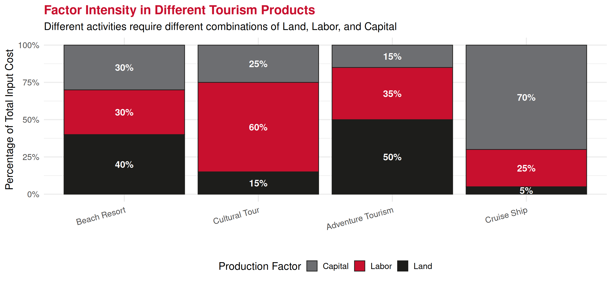
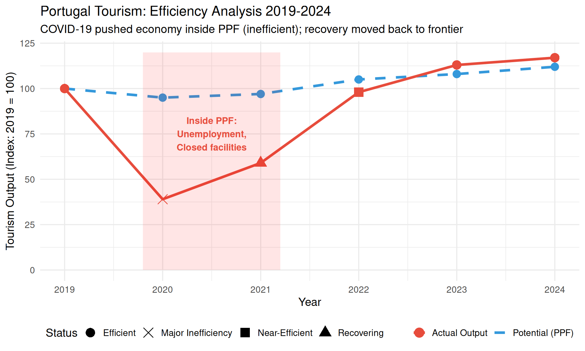
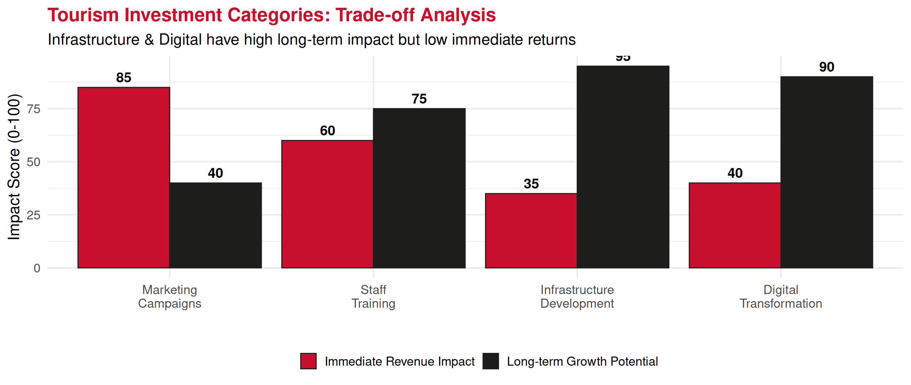
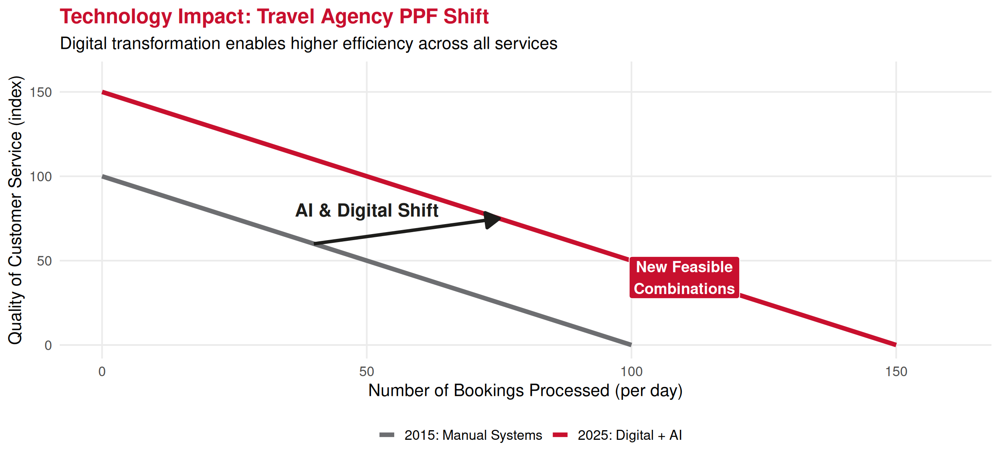

Economics Fundamentals
Lecture 4: Production Factors & Production Possibilities Frontier
Recap: Lecture 3
Key Concepts from Last Class:
- Rationality: Cost-benefit decision making
- Marginal Analysis: Decisions at the margin (MB vs MC)
- Opportunity Cost: Value of best alternative foregone
- Sunk Costs: Ignore them in decisions!
Today: We build on opportunity cost to understand:
- Production factors (inputs)
- Production Possibilities Frontier (PPF)
- Society-level trade-offs and efficiency
Production Factors (Inputs)
To produce goods and services, economies use three main factors:
Land
Natural Resources
- Agricultural land
- Minerals & energy
- Water resources
- Natural beauty
- Climate
Tourism: Beaches, mountains, heritage sites
Labor
Human Effort
- Physical work
- Mental work
- Skills & training
- Time & effort
- Entrepreneurship
Tourism: Staff, guides, managers, chefs
Capital
Produced Goods
- Buildings
- Machinery
- Infrastructure
- Technology
- Equipment
Tourism: Hotels, planes, booking systems
Factor Payments
Each factor receives compensation:
| Factor | Payment Name | Example in Tourism |
|---|---|---|
| Land | Rent | Payment for beach concession, property lease |
| Labor | Wages/Salaries | Hotel staff wages, tour guide fees |
| Capital | Interest | Return on hotel investment, equipment loans |
| Entrepreneurship | Profit | Hotel owner’s profit, airline earnings |
Income Distribution: Sum of all factor payments determines who gets what (FOR WHOM question)
Tourism Production: Example
Different tourism products use factors in different proportions:
Insight: Cruise tourism is capital-intensive, cultural tours are labor-intensive, beach resorts balanced
Production Possibilities Frontier (PPF)
Definition: The PPF shows the maximum combinations of two goods an economy can produce given:
- Fixed quantity of production factors (land, labor, capital)
- Current technology level
- Full employment of resources
Key Insight: With scarcity, producing more of one good requires producing less of another
→ This is opportunity cost visualized!
Simple PPF Example: Tourism
Imagine an economy producing only:
- Beach Tourism (hotels, resorts)
- Cultural Tourism (museums, tours, heritage sites)

Interpreting the PPF
Point A (0, 100): All resources → cultural tourism, no beach tourism
Point E (100, 0): All resources → beach tourism, no cultural tourism
Point C (60, 57): Mixed economy, balanced allocation
Point U (40, 30): Inefficient – inside PPF
- Resources unemployed or misallocated
- Could produce more of both goods!
Beyond PPF: Impossible with current resources & technology
Opportunity Cost on the PPF
Moving along the PPF reveals opportunity costs:

Opportunity Cost of moving B → C: 30 cultural units
Productive Efficiency
An economy is productively efficient when:
- It operates ON the PPF (not inside)
- Cannot produce more of one good without producing less of another
- Resources are fully employed and optimally allocated

Causes of Inefficiency
Why might an economy operate inside the PPF?
- Unemployment
- Workers without jobs
- Idle factories and equipment
- Example: COVID-19 lockdowns (2020)
- Resource Misallocation
- Resources in wrong industries
- Poor management decisions
- Example: Over-investment in declining sectors
- Lack of Technology Adoption
- Not using best available methods
- Example: Manual booking when online systems exist
Real Example: COVID and Tourism Efficiency
Tourism 2019 vs 2020-2021

Economic Growth: Shifting the PPF
PPF can shift outward due to:
- More Resources
- Population growth → more labor
- Discovery of new natural resources
- Capital accumulation (investment)
- Better Technology
- Innovation and technological progress
- Improved productivity
- Better Institutions
- Rule of law, property rights
- Efficient markets
Economic Growth Visualization

Key: Economic growth makes previously impossible combinations achievable!
Investment vs. Consumption Trade-off
Classic PPF Application: Choose between current consumption and investment

Tourism Application: Investment Choice
Tourism Investment Strategy (Example)

Strategic choice: Prioritize long-term growth (infrastructure, digital) despite lower immediate returns
Technological Change: Example
Digital Transformation in Tourism (2015-2025)

PPF Summary: Key Insights
- Shows maximum production given resources & technology
- Points on PPF = efficient (can’t produce more without trade-off)
- Points inside PPF = inefficient (unemployment, waste)
- Points outside PPF = impossible (currently unattainable)
- Moving along PPF = reallocating resources (opportunity cost)
- Shifting PPF outward = economic growth (more resources, better technology)
- Investment trade-off = consumption today vs. growth tomorrow
Real-World Applications
PPF thinking helps answer:
- Should Portugal build more hotels or preserve more heritage sites?
- How much should airlines invest in fuel efficiency vs. passenger comfort?
- Trade-off between mass tourism revenue and sustainable tourism?
- How much GDP to allocate to tourism vs. other sectors?
All involve opportunity costs and efficiency considerations!
Summary: Complete Picture
Today’s Lecture Integration:
- Production Factors (Land, Labor, Capital) are scarce inputs
- Scarcity forces choices between alternatives
- PPF visualizes society’s production possibilities
- Opportunity Cost = moving along PPF (what’s foregone)
- Efficiency = operating on (not inside) PPF
- Economic Growth = PPF shifts outward
- Investment today enables faster growth tomorrow
This connects to: Lecture 3 (opportunity cost), Lecture 2 (WHAT/HOW/FOR WHOM), Lecture 1 (scarcity & efficiency)
Exercises
Application Time!
PPF and opportunity cost calculations.
Exercise 1: Multiple Choice
Question: An economy is producing at a point inside its PPF. This indicates:
A. The economy is efficiently using all resources
B. The economy has economic growth
C. There is unemployment or resource misallocation
D. It’s impossible to produce more of any good
Answer: C
Explanation: Inside PPF means inefficiency – resources are unemployed or misallocated. Could produce more of at least one good without sacrificing the other (move toward frontier).
Exercise 2: Multiple Choice
Question: A country’s PPF shifts outward. This could be caused by:
A. Higher unemployment
B. Decrease in the labor force
C. Technological innovation
D. Producing less capital goods
Answer: C
Explanation: Outward PPF shift = economic growth. Caused by: more resources, better technology, improved productivity. Options A, B, D would shift PPF inward or cause movement inside PPF.
Exercise 3: Open Question - Part 1
Scenario: The Portuguese Algarve region has limited land and labor. It can allocate resources between golf tourism and beach tourism. Current production possibilities:
| Combination | Golf Resorts | Beach Hotels |
|---|---|---|
| A | 0 | 50 |
| B | 5 | 48 |
| C | 10 | 44 |
| D | 15 | 38 |
| E | 20 | 30 |
| F | 25 | 0 |
Exercise 3: Open Question - Part 2
Questions:
Draw the PPF with Golf Resorts on x-axis, Beach Hotels on y-axis
Calculate the opportunity cost of moving from:
- Point B to Point C
- Point D to Point E
Does the PPF exhibit increasing opportunity costs? Explain.
If region currently operates at point U (12 golf, 30 beach), what does this indicate?
A new tourism development technology is invented. How would this affect the PPF? Draw the new curve.
Exercise 3: Solution - Part a & b
a) PPF Graph:
Plots points A through F with Golf (x-axis: 0-25) and Beach (y-axis: 0-50). Curve is bowed outward (concave).
b) Opportunity Cost Calculations:
B → C (5 golf → 10 golf): \[\text{Gain in Golf} = 10 - 5 = 5 \text{ resorts}\] \[\text{Loss in Beach} = 48 - 44 = 4 \text{ hotels}\] \[\text{Opportunity Cost} = \frac{4 \text{ hotels}}{5 \text{ resorts}} = 0.8 \text{ beach hotels per golf resort}\]
Exercise 3: Solution - Part a & b
D → E (15 golf → 20 golf): \[\text{Gain in Golf} = 20 - 15 = 5 \text{ resorts}\] \[\text{Loss in Beach} = 38 - 30 = 8 \text{ hotels}\] \[\text{Opportunity Cost} = \frac{8 \text{ hotels}}{5 \text{ resorts}} = 1.6 \text{ beach hotels per golf resort}\]
Exercise 3: Solution - Part c, d, e
c) Increasing Opportunity Costs?
YES! Opportunity cost increases from 0.8 (B→C) to 1.6 (D→E).
Explanation: As more resources shift to golf, we use resources less suited for golf (originally better for beaches). Each additional golf resort requires sacrificing more beach hotels.
d) Point U (12 golf, 30 beach):
This is INSIDE the PPF (compare to point D: 15 golf, 38 beach).
Indicates:
- Inefficiency (unemployment or resource misallocation)
- Could produce more golf without reducing beach (move to D: 15 golf, 38 beach)
- Could produce more beach without reducing golf (move toward 12 golf, ~43 beach)
Exercise 3: Solution - Part e
e) New Technology Effect:
Technology shifts PPF OUTWARD (economic growth).
New PPF might be:
| Combination | Golf Resorts | Beach Hotels |
|---|---|---|
| A’ | 0 | 60 (+10) |
| C’ | 12 | 55 (+11) |
| E’ | 24 | 38 (+8) |
| F’ | 30 | 0 (+5) |
Effect: Can now produce MORE of both types of tourism with same resources!
Graph: Draw original PPF, then new PPF further from origin (parallel or biased depending on where technology applies).
Next Lecture
February 19, 2026: Budget Set and Budget Constraint
Thank You!
Questions?
Contact: paulo.fagandini@ext.universidadeeuropeia.pt
Next class: Wednesday, February 19, 2026
This completes the Fundamentals block. Students should understand: scarcity → trade-offs → opportunity cost → PPF → efficiency. These concepts are foundational for all future topics.